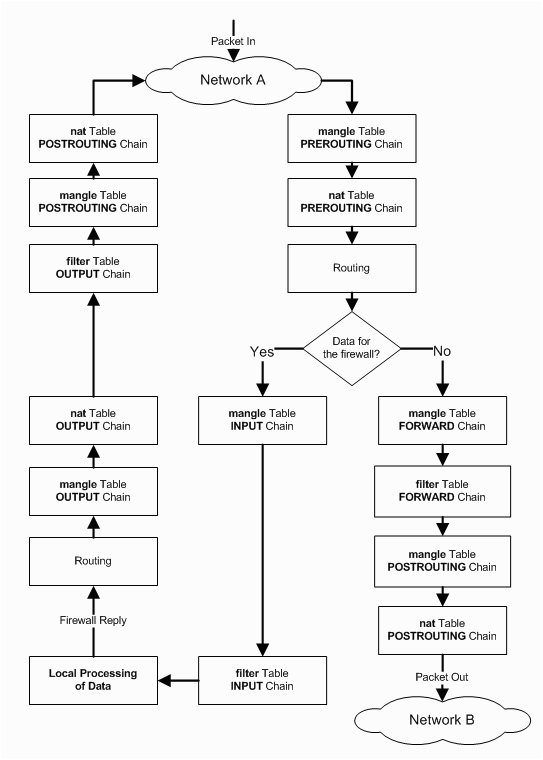

iptables 指南
iptables 是linux下的流量过滤工具（防火墙），程序员要不要学习？这里举两个例子：
- 程序访问第三方接口，如何模拟接口 超时和挂掉
- 程序启动后需要预热，如何在预热阶段拒绝掉所有请求或者部分请求
如果使用iptables，事情就很简单，注意：模拟结束后用 iptables -F 清除
- 模拟超时
iptables -A OUTPUT -p tcp -d 220.181.57.217 --dport 443 -j DROP - 模拟挂掉
iptables -A OUTPUT -p tcp -d 220.181.57.217 --dport 443 -j REJECT --reject-with tcp-reset - 预热时拒绝请求
iptables -A INPUT -p tcp --dport 6379 -j REJECT --reject-with tcp-reset - 拒绝部分请求（单IP最大5个连接）
iptables -A INPUT -p tcp --dport 6379 -m connlimit --connlimit-above 5 -j REJECT --reject-with tcp-reset
man iptables 洋洋洒洒2000多行，如何开始学习呢？
1 iptables 的运行架构
iptables 由多个 table 组成，每个 table 分多个 chain ，每个 chain 分多个 rule 。 网络packet 按内置的顺序通过 table 和 chain 。 table 有4个， filter nat mangle raw ，默认是 filter ， filter 有 INPUT FORWARD OUTPUT 三个 chain 。可以自定义 chain ，但是这里不讲。看下图理解 网络packet 通过它们的顺序：

table 的顺序其实并不十分重要，特定的功能只能在特定的 table 中完成， chain 通常只关心 INPUT 是进入流量， output 是外出流量即可。 chain 内 rule 的顺序是用户自己控制的。 rule 由两部分组成 match 和 target ， match 指定了匹配条件，例如： -p tcp --dport 6379 -m connlimit --connlimit-above 5 。 target 指定了 packet 匹配时的操作，常用的有 ACCEPT REJECT DROP LOG 等，有的 target 会终止 chain 匹配后面的 rule ，有的则不会。例如目标是 ACCEPT 会终止 ， LOG 则不会。
注意 rule 过多，或者使用了某些性能不理想的 match 会导致性能问题。
2 iptables 辅助命令
2.1 查看iptables
iptables -L -v -n --line-number 列出所有的规则。
-v输出详细信息-n用IP和端口而不是主机名和服务名--line-number列出了rule对应的编号，用于插入、修改、删除rule。
2.2 清空iptables
iptables -F
2.3 保存和恢复iptables
iptables-save > iptables.cfg保存iptables-restore < iptables.cfg恢复
3 增删改 rule
因为 rule 的顺序很重要，所以需要增加时需要关心位置。
-A在chain的尾部添加rule-I在首部或者指定位置前添加rule-R替换指定的rule-D删除rule
假设现在的iptables如下， iptables -L INPUT -n -v --line-number 只显示 INPUT
Chain INPUT (policy ACCEPT 10 packets, 570 bytes) num pkts bytes target prot opt in out source destination 1 0 0 DROP tcp -- * * 0.0.0.0/0 0.0.0.0/0 tcp dpt:6379
例如：
iptables -A INPUT -p tcp -s 192.168.10.10 --dport 22 -j ACCEPT; iptables -A INPUT -p tcp --dport 222 -j DROP在链尾添加iptables -R INPUT 3 -p tcp --dport 22 -j DROP发现1中222端口写错了，要改成22端口。3是rule的numiptables -I INPUT -p tcp --dport 6378 -j DROP在链首插入iptables -I INPUT 4 -p tcp --dport 22 -j LOG --log-prefix "DENY在指定位置4前插入
此时iptables是
Chain INPUT (policy ACCEPT 121 packets, 38196 bytes) num pkts bytes target prot opt in out source destination 1 0 0 DROP tcp -- * * 0.0.0.0/0 0.0.0.0/0 tcp dpt:6378 2 0 0 DROP tcp -- * * 0.0.0.0/0 0.0.0.0/0 tcp dpt:6379 3 0 0 ACCEPT tcp -- * * 192.168.10.10 0.0.0.0/0 tcp dpt:22 4 5 320 LOG tcp -- * * 0.0.0.0/0 0.0.0.0/0 tcp dpt:22 LOG flags 0 level 4 prefix `DENY 22' 5 0 0 DROP tcp -- * * 0.0.0.0/0 0.0.0.0/0 tcp dpt:22
使用 iptables -D INPUT -p tcp --dport 22 -j DROP 和 iptables -D INPUT 3 删除两条规则。
注意 使用 num 操作 rule 虽然简单，但是 num 并不是和 rule 绑定的，它只是一个序号，随着 chain 的变化， num 也会变，尽量少用。
操作 OUTPUT FORWARD 等 chain 的方法类似。
4 target
使用 -j 参数指定 target ，以下是常用的 target
4.1 ACCEPT
这是默认的target，通常 ACCEPT 需要和 DROP或REJECT 配合使用，例如：只允许来自192.168.10.10的22请求
iptables -A INPUT -p tcp -s 192.168.10.10 --dport 22 -j ACCEPT白名单iptables -A INPUT -p tcp --syn --dport 22 -j DROP拒绝所有22的请求，但是不拒绝本机向外请求22
注意这两条 rule 的顺序非常重要（ -A append），所有非192.168.10.10的请求都会走到 rule 2 被拒绝
4.2 DROP
丢弃掉收到的网络包，没有任何响应（仿佛这个IP不存在），客户端发送的 syn 被丢弃了，客户端会重试，直到超时。
4.3 REJECT
丢掉收到的网络包，但会有响应，模拟网络错误。通过 --reject-with 指定响应的类型，默认是 port-unreachable
4.4 LOG
用于记录日志。先看例子, 这里LOG放到了REJECT的前面，因为放到后面就无法记录，REJECT执行后 chain 就结束了
iptables -I INPUT -p tcp --dport 6379 -m connlimit --connlimit-above 5 -j REJECT --reject-with tcp-resetiptables -I INPUT -p tcp --dport 6379 -m connlimit --connlimit-above 5 -j LOG --log-prefix "DENY 6379"
日志记录到了 /var/log/messages 中。
5 match
5.1 常用选项
-s指定源IP，或者IP段-d指定目标IP，或者IP段-p指定协议，常用的有tcpudpicmp等--sport在指定-p为tcp/udp时使用，指定源端口，可以使用6379:7399指定范围--dport在指定-p为tcp/udp时使用，指定目标端口，可以使用6379:7399指定范围-m指定match的名字，通常-p tcp隐含了-m tcp，--sport和--dport也是-m tcp的参数。udp类似。
下面介绍常用的 match ，用户可以编写自己的 match 。也有第三方 match 不包含在标准 iptables 发行版中，可以自己安装。
5.2 iprange
指定IP的范围，例如：
iptables -A INPUT -m iprange --src-range 192.168.1.10-192.168.1.20 -j DROP
5.3 multiport
指定多个IP或者IP范围
iptables -A INPUT -p tcp -m multiport --dports 21,25,500:1024 -j DROP
5.4 connlimit
限制单个IP（或IP段）的并发请求
iptables -A INPUT -p tcp --syn --dport 80 -m connlimit --connlimit-above 20 -j REJECT
5.5 limit
限制系统的并发，最大500每秒，允许10个在排队。
iptables -A INPUT -p tcp --dport 80 -m limit --limit 500/second --limit-burst 10 -j ACCEPT; iptables -A INPUT -p tcp --dport 80 -j DROP
5.6 owner
匹配用户uid，仅用于 OUTPUT POSTROUTING ，因为 INPUT 无法获取 网络packet 的uid。例如：只允许root用户访问某台机器
iptables -A OUTPUT -p tcp -d 192.168.10.5 -m owner ! --uid-owner 0 -j REJECT --reject-with tcp-reset
5.7 string
用于匹配 网络packet 的内容，例如拒绝某些带某些user-agent的请求（可能是攻击）
iptables -I INPUT -p tcp --dport 80 -m string --algo kmp --string "User-Agent: HttpClient/java" -j REJECT --reject-with tcp-reset